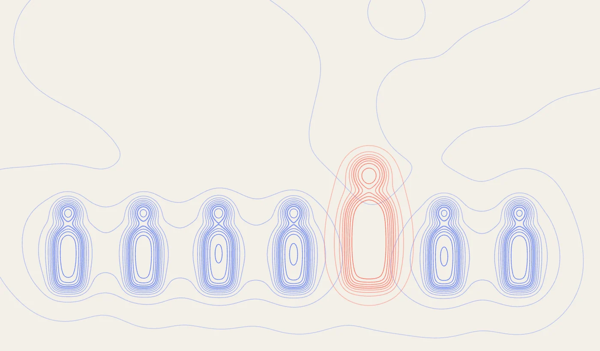

Introduction
It’s widely recognised that one of the top challenges for startups is hiring the best resources and building a startup team. The best resources are typically, say 10x, more valuable to an organisation compared to an “average” team member.
This article aims to provide some practical advice to help organisations hire the best resources. We believe there are six main interconnected elements that should be considered.
Opportunity
Organisations need to understand what the competition is offering and focus on differentiation.
We believe individuals are looking for opportunity to:
work on interesting challenges (recognising that meaningful or purposeful work is very specific to each individual)
work with engaging colleagues (who will stretch, challenge and support each other)
work flexibly — (hybrid working, flexible hours, independence and responsibility)
learn and gain new experience — (enable individuals to spend time on personal and professional development)
Flexibility
Flexibility should be regarded as a fundamental principle (ie. a non-differentiating factor). Accommodating individuals’ preferences for office, remote, or hybrid working and offering flexible hours remains an attraction to potential talent. However, it is no longer unique. Alongside hybrid working, companies should endeavour to empower individuals with independence and responsibility, avoiding overly fixed hierarchies and structures. Don’t be restricted by rigid BAU working methods. The key question from the employer’s perspective is: how to mobilise and organise the best resources to address specific challenges? Flexibility is expected by today’s prospective candidates. Embracing it will be mutually beneficial for both them and their employers.
Compensation
Clearly compensation is very important but should be regarded as a hygiene factor — ie. does not motivate an individual to greater performance but is a factor that will cause dissatisfaction. (Remedying the causes of dissatisfaction will not create satisfaction). Given the extra value that the best resources bring, compensation should be significantly above market rates. Startups are likely to have limited funds to pay high salaries, so equity and ownership are critical. Prospective candidates should be given a fair stake in the organisation’s equity and ownership structures. Finally, attractive perks such as paid sabbaticals, total wellness (gym membership, cycle to work, mental health programs, financial literacy, volunteerism, in-house barista/coffee shop) and personal development funds can be very appealing to prospective candidates.
Interactions
Interactions may be the most important factor in hiring the best resources. We feel individuals will be attracted to an organisation and environment that enables meaningful interaction with colleagues. Imagine working for an organisation where every day and every interaction is highly enjoyable and rewarding, provides learning and development and results in high quality results that everyone takes pride in. Organisations need to demonstrate to prospective candidates they have the tools, processes and environment to enable rewarding interactions on a day-to-day basis. Evidence of senior management being accessible and approachable, rather than distant, is also attractive — the opportunity to learn skills from experienced individuals, and to influence a company’s development through interacting with them, is a real draw. Smaller-scale nimble start-ups have the advantage here, and this asset should be leveraged more.
Organic culture
“A” players attract “A” players. Creating the right culture will attract the best hires, who in turn, will attract highly capable individuals, building a self-fulfilling and sustaining culture. Clearly, it will be important to guard against homogeneity — a team of clones — multi-disciplinary teams provide competitive advantage. This means that creating a distinctive, supportive and trusting culture, compelling vision, shared values and brand is critical. Furthermore, explaining to potential candidates the business plan and financial targets will help make the vision and culture more tangible.
Learning
We place exceptional value on learning and believe learning opportunities will attract the best resources. It’s possible to create both business models and working models to enable individuals to spend a significant amount of time on personal and professional development. This investment will, no doubt, pay back in terms of motivation, innovation and retention. In addition, everyone should be assigned a mentor to provide access to a different perspective and to help address gaps in skills and knowledge.
The mechanics
Regularly survey the market, build a pipeline of potential roles, regularly assess skill gaps and continuously have “ears and eyes open” for the best resources.
Leverage employees’ networks and attendance at external events, such as conferences, webinars, training etc
Have a digital on-boarding process to provide transparency and enable regular communication
Invest time and attention in creating clear role profiles, considering attitude, soft skills, communication, in addition to the technical or subject matter knowledge
Involve current employees in the assessment process (meet the team, tour the office, lunch together…) and use practical tests and case studies to help assess problem solving skills
Make sure to check references
Further reading
Your Approach to Hiring Is All Wrong, Harvard Business Review, May-June 2019
https://hbr.org/2019/05/your-approach-to-hiring-is-all-wrong
10 Tips for Recruiting the Best Talent, HR Exchange Network, Aug 2019
How to Hire the Right Person, The New York Times, 2016
https://www.nytimes.com/guides/business/how-to-hire-the-right-person
How to hire the best talent for your startup on a tight budget, EU-Start ups, Jan 2021
https://www.eu-startups.com/2021/01/how-to-hire-the-best-talent-for-your-startup-on-a-tight-budget/
HOW TO HIRE EMPLOYEES, Tony Robbins
https://www.tonyrobbins.com/career-business/how-to-hire-superstars/
How to Hire Great Talent: 10 Hiring Tips for Startups, Talentdesk, Aug 2021
https://www.talentdesk.io/blog/best-startup-hiring-tips
THE ULTIMATE STARTUP HIRING GUIDE: HOW TO BUILD A WINNING TEAM, Cobloom, Mar 2020
https://www.cobloom.com/blog/startup-hiring
Hiring for startups: five expert tips on how to hire the right people, Sifted, Nov 2019
https://sifted.eu/articles/startup-hiring/
How to Hire the Best Employees for Your Startup, Upwork, Jan 2021
https://www.upwork.com/resources/recruit-talent-for-startup
Who Is Winning the Talent War?, Gartner
https://www.gartner.com/en/human-resources/research/talentneuron/winning-the-new-war-for-talent
Recruitment Guide for Founders hiring in 2022, Venture Insights, Jan 2022
https://www.linkedin.com/pulse/recruitment-guide-founders-hiring-2022-alexandra-di-nella/
Winning the war for talent, TheHRDirector, Nov 2021
https://www.thehrdirector.com/features/talent-management/winning-the-war-for-talent/
How to Win the War for Talent in 2020, Entrepreneur.com, Jan 2020
https://www.entrepreneur.com/article/344360
Winning the war for talent in the post-pandemic world, Slack June 2021
https://slack.com/intl/en-gb/blog/news/winning-the-war-for-talent-in-the-post-pandemic-world
10 COMMON STARTUP CHALLENGES AND HOW TO FACE THEM .Tech domains, August 2019
https://get.tech/blog/startup-challenges/
101 Unique Employee Benefit Ideas to Attract the Best Talent, Gympass
https://blog.gympass.com/en/101-unique-employee-benefit-ideas/